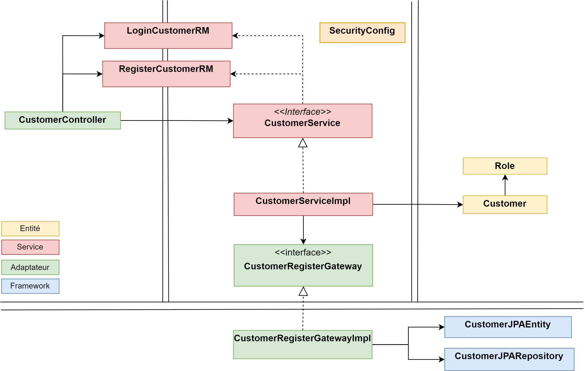
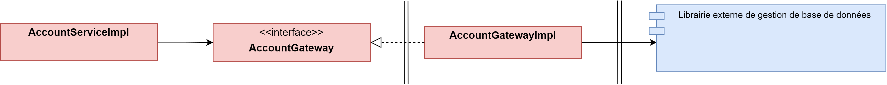

Introduction
Le framework Spring permet de créer des applications d'entreprises. Dans ce cours nous allons voir comment l'exploiter à travers deux extensions majeures Spring Boot et Spring Security. Premièrement, Spring Boot facilite la création d'applications autonomes prêtes à l'emploi avec un minimum de configuration. Puis Spring Security qui fournit l'authentification, l'autorisation et d'autres fonctionnalités de sécurité pour les applications d'entreprise.
Plan du cours
- Présentation de l'architecture mise en place
- Création du service compte bancaire avec Spring Boot
- Création du service d'authentification avec Spring Security
- Explication générale
- Authentification Basic
- Authentification JWT
Disclaimer
Ce tutoriel se concentre sur la mise en œuvre et la réalisation efficace d'une application Spring avec Spring Security. Nous ne fournirons pas de détails approfondis sur le fonctionnement interne de Spring. Pour toute compréhension approfondie de Spring, nous vous encourageons à effectuer des recherches personnelles.
Architecture Générale
Nous optons pour une architectecure en microservices où chaque service peut être deployé séparément et dispose de sa propre base de données.
Chaque service reprendra le même fonctionnement :
- Un service représentant le comtpe bancaire d'un client.
- Un service permettant l'authentification d'un client
- Un dernier service gérant la communication vers les deux autres microservices.
Configuration en MicroService
Nous utiliserons Maven pour gérer nos services et les librairies externes utilisées.
Découpage du projet
Comme evoqué quand le chapitre précédent nous allons déployer 3 microservices. Cela signifie donc 3 projets Maven indépendants. Cependant afin de faciliter l'utilisation des librairies nous allons regrouper ces 3 projets sous un projet parent prixbanque
POM parent
Propriétés
<properties>
<microservice.version>0.0.1-SNAPSHOT</microservice.version>
<java.version>17</java.version>
<maven.compiler.source>17</maven.compiler.source>
<maven.compiler.target>17</maven.compiler.target>
<spring.boot.dependencies.version>2.7.4</spring.boot.dependencies.version>
</properties>
Microservice
Le pom parent déclare également les 3 microservices que nous allons développer ultérieurement.
<modules>
<module>bankaccount</module>
<module>registration</module>
<module>gateway</module>
</modules>
On doit également ajouter ces modules comme dépendance du projet. Ainsi dans le bloc <dependencyManagement></dependencyManagement> nous rajoutons
<!-- MicroServices-->
<dependency>
<groupId>adriencaubel.fr</groupId>
<artifactId>registration</artifactId>
<version>${microservice.version}</version>
</dependency>
<dependency>
<groupId>adriencaubel.fr</groupId>
<artifactId>connection</artifactId>
<version>${microservice.version}</version>
</dependency>
<dependency>
<groupId>adriencaubel.fr</groupId>
<artifactId>banktransfert</artifactId>
<version>${microservice.version}</version>
</dependency>
Les autres dépendances
<!-- Microservice -->
...
<!-- Spring -->
<dependency>
<groupId>org.springframework.boot</groupId>
<artifactId>spring-boot-starter-data-jpa</artifactId>
<version>${spring.boot.dependencies.version}</version>
</dependency>
<dependency>
<groupId>org.springframework.boot</groupId>
<artifactId>spring-boot-starter-web</artifactId>
<version>${spring.boot.dependencies.version}</version>
</dependency>
<dependency>
<groupId>org.springframework.boot</groupId>
<artifactId>spring-boot-starter-test</artifactId>
<version>${spring.boot.dependencies.version}</version>
<scope>test</scope>
</dependency>
<dependency>
<groupId>org.springframework.boot</groupId>
<artifactId>spring-boot-starter-security</artifactId>
<version>${spring.boot.dependencies.version}</version>
</dependency>
<dependency>
<groupId>org.springframework.cloud</groupId>
<artifactId>spring-cloud-starter-gateway</artifactId>
<version>3.1.4</version>
</dependency>
<!-- Base de données -->
<dependency>
<groupId>javax.xml.bind</groupId>
<artifactId>jaxb-api</artifactId>
<version>2.3.1</version>
</dependency>
<dependency>
<groupId>org.postgresql</groupId>
<artifactId>postgresql</artifactId>
<version>42.5.0</version>
<scope>runtime</scope>
</dependency>
<!-- Utility -->
<dependency>
<groupId>org.projectlombok</groupId>
<artifactId>lombok</artifactId>
<version>1.18.24</version>
<scope>provided</scope>
</dependency>
<!-- Tests -->
<dependency>
<groupId>org.junit.jupiter</groupId>
<artifactId>junit-jupiter-engine</artifactId>
<version>5.9.1</version>
<scope>test</scope>
</dependency>
<dependency>
<groupId>org.junit.jupiter</groupId>
<artifactId>junit-jupiter-api</artifactId>
<version>5.9.1</version>
<scope>test</scope>
</dependency>
<dependency>
<groupId>org.junit.platform</groupId>
<artifactId>junit-platform-runner</artifactId>
<version>1.9.1</version>
<scope>test</scope>
</dependency>
Le build
<build>
<plugins>
<plugin>
<groupId>org.springframework.boot</groupId>
<artifactId>spring-boot-maven-plugin</artifactId>
<version>${spring.boot.dependencies.version}</version>
</plugin>
</plugins>
</build>
Architecture d'un microservice
Nous avons évoqué l'architecture générale de notre application. Maintenant nous nous intéressons à l'architecture au sein d'un service. Nous une architecture par couche (layer) appelée Clean Architecture.
La Clean Architecture met l'accent sur la séparation des préoccupations et sur la dépendance des couches internes du système sur les couches externes. Elle favorise également l'indépendance des frameworks, des bibliothèques et des outils externes.
Elle rend les systèmes logiciels maintenables, évolutifs et testables en isolant les détails d'implémentation dans les couches internes et en favorisant l'indépendance des couches externes.
https://blog.cleancoder.com/uncle-bob/2012/08/13/the-clean-architecture.html
Brève introduction

Entités
L'entité ne dépend de rien, sauf éventuellement d'autres entités. Elle contient des données (état) et une logique réutilisables pour diverses applications. Elles sont le cœur de notre application.
Cas d'utililisation
Les cas d'utilisation interagissent avec les entités (dépendent d'elles) et détiennent la logique de l'application spécifique. Les UseCase peuvent être lié à des librairies. Par exemple avec une couche d'accès aux données
Dans notre application, le diagramme BPMN nous permet d'identifier facilement quels seront ces cas d'utilisation
Adaptateurs
La couche d'adaptateur est une couche qui sert d'interface entre la logique métier (domaine) et les frameworks ou technologies externes tels que les bases de données, les services web, les systèmes de messagerie, accès aux bases de données, etc. Elle a pour rôle de traduire les données provenant de ces sources externes vers un format que la logique métier peut comprendre et utiliser, et vice versa.
https://refactoring.guru/fr/design-patterns/adapter
Librairies
Le cœur de l'application doit être indépendant des points d'entrée et des points de sortie (les librairies). En effet, si un framework ou une technologie externe ne répond plus aux besoins du système, il peut être remplacé facilement sans impacter la logique métier.
Exemple
Chaque service suivra la même architecture que ci-dessous. Nous reviendrons en détail sur leur implémentation dans les chapitres suivants.

Introduction
Ce module est dédié à la gestion d'un compte bancaire. Nous distinguons la notion de compte bancaire et d'utilisateur, un utilisateurs peut posséder plusieurs compte bancaire.
Analyse du besoin
Dans notre application un compte bancaire se traduit par les actions suivantes :
- Créer le compte bancaire pour un utilisateur
- Mettre à jour le compte
- Supprimer le compte bancaire
- Consulter son compte bancaire
- Afficher tous ses comptes bancaires
Nous rajoutons également quelques règles concernant les comptes bancaires :
- Un compte bancaire peut être du type
CHEQUEouEPARGNE - Un compte bancaire porte un nom (e.g. compte principale)
- Un compte bancaire à une
Balance
Configuration
Nous avons besoin des dépendances Spring suivantes :
- Spring Boot
- Spring Web
- Spring Data JPA
Pom
<project xmlns="http://maven.apache.org/POM/4.0.0" xmlns:xsi="http://www.w3.org/2001/XMLSchema-instance" xsi:schemaLocation="http://maven.apache.org/POM/4.0.0 https://maven.apache.org/xsd/maven-4.0.0.xsd">
<modelVersion>4.0.0</modelVersion>
<parent>
<groupId>uqac.groupe6</groupId>
<artifactId>prixbanque</artifactId>
<version>0.0.1-SNAPSHOT</version>
</parent>
<artifactId>bankaccount</artifactId>
<dependencies>
<!-- Spring -->
<dependency>
<groupId>org.springframework.boot</groupId>
<artifactId>spring-boot-starter-data-jpa</artifactId>
</dependency>
<dependency>
<groupId>org.springframework.boot</groupId>
<artifactId>spring-boot-starter-web</artifactId>
</dependency>
<dependency>
<groupId>org.springframework.boot</groupId>
<artifactId>spring-boot-starter-test</artifactId>
<scope>test</scope>
</dependency>
<!-- Base de données -->
<dependency>
<groupId>javax.xml.bind</groupId>
<artifactId>jaxb-api</artifactId>
</dependency>
<dependency>
<groupId>org.postgresql</groupId>
<artifactId>postgresql</artifactId>
<scope>runtime</scope>
</dependency>
<!-- Utility -->
<dependency>
<groupId>org.projectlombok</groupId>
<artifactId>lombok</artifactId>
<scope>provided</scope>
</dependency>
</dependencies>
<build>
<plugins>
<plugin>
<artifactId>maven-assembly-plugin</artifactId>
<configuration>
<archive>
<manifest>
<mainClass>uqac.groupe6.bankaccount.BankAccountApplication</mainClass>
</manifest>
</archive>
<descriptorRefs>
<descriptorRef>jar-with-dependencies</descriptorRef>
</descriptorRefs>
</configuration>
<executions>
<execution>
<id>make-assembly</id> <!-- this is used for inheritance merges -->
<phase>package</phase> <!-- bind to the packaging phase -->
<goals>
<goal>single</goal>
</goals>
</execution>
</executions>
</plugin>
</plugins>
</build>
</project>
Application.properties
Dans le fichier src/main/resources/application.properties
- On spécifie le port sur lequel l'application doit être déployée
- On spécifie l'ensemble des informations pour accéder au services de gestion de base de données
# Server configuration
server.port=8081
#PostgreSQL Configuration
spring.datasource.url=jdbc:postgresql://localhost:5432/account
spring.datasource.username=postgres
spring.datasource.password=postgres
spring.jpa.hibernate.ddl-auto=update
spring.jpa.show-sql=true
spring.jpa.properties.hibernate.format_sql=true
spring.jpa.properties.hibernate.dialect=org.hibernate.dialect.PostgreSQL81Dialect
Architecture
Nous utilisons la Clean Architecture pour développer notre application. Nous obtenons ainsi le diagramme de classe simplifié suivant.
Package
Tout d'abord nous devons
Le domaine
Domain encapsulate Enterprise wide business rules. An entity can be an object with methods, or it can be a set of data structures and functions.
public class Account {
private String name;
private AccountType accountType;
private Balance balance;
}
public class Balance {
private double amount;
}
public enum AccountType {
CHEQUE, EPARGNE
}
Service
This layer contains application specific business rules. It encapsulates and implements all of the use cases of the system. These use cases orchestrate the flow of data to and from the entities, and direct those entities to use their enterprise wide business rules to achieve the goals of the use case.
Le service métier, ici la gestion d'un compte bancaire est :
- représenté par une interface
AccountService - cette interface est appelée par notre client au travers du Contrôleur
AccountController - Les informations transmises entre le Contrôleur et le service métier sont encapsulées dans un DTO.
- On récupère les informations pertinantes contenu dans le DTO et on applique l'action demandée (e.g créer un nouvel utilisateur)
- Certaine action comme créer un nouvel utilisateur necessite de faire appel à la base de donnée que nous appelerons au travers d'un Adaptateur
AccountGateway
Data Transfert Object
A Data Transfer Object (DTO) is an object that is used to encapsulate data, and send it from one subsystem of an application to another.
Dans notre cas les DTOs vont permettre de transférer des informations entre le Contrôleur et le Service métier. Ainsi, le Contrôleur :
- Recupère les informations fournies par l'utilisateur (e.g. identifiant utilisateur, nom du compte, etc ...).
- Au lieu de transférer directement les informations au Service métier, il va les encapsuler dans un objet DTO.
- Transmet de DTO au Service métier
Exemple
Si on souhaite créer un nouveau compte bancaire :
- nous devons fournir au Contrôleur l'identifiant de l'utilisateur, le nom du compte à créer et le type du compte (Epargne ou Chèque). Ces informations seront dans le boby de notre requête http
- nous créons un nouvel objet de type
AccountRequestModelen précisant la valeur des attributs en fonction du point précédent. - le Contrôleur appelle la méthode
accountService.create(accountRequestModel)qui accepte seulement un DTO
"DTO" et "Request/ResponseModel" représente la même notion.
RequestDTO
Il fait la communication du Controller vers le Service
public class AccountRequestModel {
private Long idCustomer;
private Long idAccount;
private String name;
private String accountType;
}
ResponseDTO
Il fait la communication du Service vers le Controller
public class AccountResponseModel {
private String name;
private String accountType;
private double balanceAmount;
}
Note
Nous pourrions créer plusieurs DTOs requêtes et réponses afin d'éviter d'avoir des attributs null. En effet, lors de la création d'un nouveau compte bancaire l'attribut idAccount sera null.
Mais dans la construction de notre application nous souhaitons rester simple et n'utiliser qu'un seul DTO.
Base de données
Pour pour persister des informations en base de données nous allons utiliser des librairies externes. Afin de protéger le coeur de notre application la communication avec la librairie externe se fera à travers d'un adaptateur. Nous avons choisis cette solution car :
- Si la librairie externe utilisée modifie son interface alors seule la classe Adaptateur devra être adaptée.
- Si nous décidons d'utiliser une autre librairie qui ne respecte pas les spécification JPA alors seule la classe Adaptateur devra être adaptée.
Ainsi avec cette option, le coeur restera inchangé quelques soient les choix et directive sur les librairies externes

Entités JPA
Dans notre application nous avons deux types d'entités
- Les entités du domaine
- Les entités JPA
Malgré leur forte similitude il est important deux les distinguer dans deux classes séparées. En effet, le coeur applicatif ne doit pas savoir comment les entités sont persistées (fichier, bases de données, etc ...). Ainsi, le lien entre les entités du domaine et les entités JPA sera fait par l'implémentation AccountGatewayIml
Ensuite, lorsque nous créons une entité JPA nous devons préciser :
- que c'est une entité via l'annonation
@Entity - la table où cette entité est persisté
@Table(nom_table) - par la suite nous vous spécifier des options sur certain attributs :
@Idpour l'identifiant@OneToOnelorsque nous avons une relation de dépendance entre deux tables- etc ...
@Entity
@Table(name = "account")
public class AccountJpaEntity {
@Id
@GeneratedValue(strategy = GenerationType.IDENTITY)
private long id;
@NonNull
private Long customerId;
@NonNull
private String name;
@NonNull
private LocalDateTime createdAt;
@OneToOne(cascade = { CascadeType.ALL })
@NonNull
private BalanceJPAEntity balanceJPAEntity;
@Enumerated(EnumType.STRING)
@NonNull
private AccountTypeJPAEnum accountType;
}
@Entity
@Table(name = "balance")
public class BalanceJPAEntity {
@Id
@GeneratedValue(strategy = GenerationType.IDENTITY)
private long id;
@NonNull
private double amount;
@ElementCollection
@CollectionTable(name = "transaction", joinColumns = @JoinColumn(name = "id"))
@Column(name = "transactions")
private List<Integer> transactionList;
@NonNull
private LocalDateTime lastUpdate;
}
public enum AccountTypeJPAEnum {
CHEQUE, EPARGNE
}
Le Repository
Il orchestre l'entity manager pour la persistance en base de données. Pour créer notre propre repository nous devons implémenter l'interface JPARepository.
En implémentant cette interface nous n'avons pas besoin d'écrire les méthodes de base comme save, delete, getById, etc ... elles ont déjà été implémentées. Cependant si nous souhaitons des méthodes plus spécifique à notre problème alors nous devons les écrires.
Par exemple, nous avons définie une méthode qui permet lister tous les comptes d'un utilisateur
public interface AccountJpaRepository extends JpaRepository<AccountJpaEntity, Long> {
List<AccountJpaEntity> findByCustomerId(Long idCustomer);
Optional<AccountJpaEntity> findByCustomerIdAndName(Long idCustomer, String name);
List<AccountJpaEntity> findByCustomerIdAndAccountType(Long idCustomer, AccountTypeJPAEnum accountType);
}
Ce qui est encore plus fort, c'est que nous n'avons même pas besoin d'implémenter cette classe. En effet, en écrivant bien le nom des méthodes find + By + something où le something un attribut dans nos entités JPA, le framwork est capable d'écrire automatiquement la requête SQL précise.
La Gateway
Elle traduit nos :
- entités JPA en entités domaine
- entités domaine en entités JPA
public interface AccountGateway {
void create(Long idCustomer, String accountName, AccountType accountType);
void updateName(Long accountId, String newAccountName);
void delete(Long idAccount);
Account findByAccountId(Long idAccount);
Account findByCustomerIdAndByName(Long idCustomer, String name);
Account findByCustomerIdAndAccountId(Long idCustomer, Long idAccount);
List<Account> findAllAccounts(Long idCustomer);
List<Account> findByCustomerIdAndAccountType(Long customerId, AccountType accountType);
}
La méthode create
Objectif Créer un nouveau compte bancaire à un utilisateur. Elle prend donc en paramètre l'identifiant du client, le nom du compte à créer ainsi que son type.
- Crée l'ensemble des entités JPA nécessaire en utilisant les paramètres
- Appelle la méthode
savedisponible dansAccountJPARepository(car elle implémenteJPARepository)
@Component
public class AccountGatewayImpl implements AccountGateway {
private final AccountJpaRepository accountJpaRepository;
@Override
public void create(Long idCustomer, String accountName, AccountType accountType) {
accountJpaRepository.save(
new AccountJpaEntity(idCustomer, accountName, LocalDateTime.now(),
new BalanceJPAEntity(0.0, LocalDateTime.now()), AccountTypeJPAEnum.valueOf(accountType.name())));
}
...
}
La méthode findAllAccounts
Objectif Récupérer tous les compte bancaires qu'un utilisateur possède
- Appeler la méthode
findByCustomerIdcréée précédement dansAccountJpaRepository - Convertir chaque AccountJPAEntity en Account. En effet, la partie métier ne traite que les entités du domaine
- Retourner la liste
@Override
public List<Account> findAllAccounts(Long idCustomer) {
List<Account> toReturn = new ArrayList<>();
for (AccountJpaEntity accountJpaEntity : accountJpaRepository.findByCustomerId(idCustomer)) {
toReturn.add(accountJpaToDomain(accountJpaEntity));
}
return toReturn;
}
private Account accountJpaToDomain(AccountJpaEntity jpaEntity) {
return Account.builder().name(jpaEntity.getName())
.accountType(AccountType.valueOf(jpaEntity.getAccountType().name()))
.balance(balanceJpaToDomain(jpaEntity.getBalanceJPAEntity())).build();
}
Service Métier
Il fait le lien avec les trois parties :
- Le
Controllerd'où il reçoit une requête - Le
Domainequ'il doit exploiter / modifier - La base de données où sont stocker les informations
public interface AccountService {
void create(AccountRequestModel requestModel) throws AccountNameAlreadyExistException;
void update(AccountRequestModel requestModel) throws AccountDoestExistException;
void delete(AccountRequestModel requestModel) throws AccountDoestExistException;
AccountResponseModel getOneAccount(AccountRequestModel requestModel);
List<AccountResponseModel> getAllAccounts(AccountRequestModel requestModel);
List<AccountResponseModel> getAllAccountType(AccountRequestModel requestModel);
}
Sur l'implémentation nous devons spécifier l'annoation @Service
@Service
public class AccountServiceImpl implements AccountService {
...
}
Créer un compte bancaire
Pour créer un nouveau compte bancaire à l'utilisateur nous devons :
- vérifier que le compte n'existe pas
- donc vérifier en base de données si nous avons quelque chose
- vérifier que le type de compte souhaité existe
- vérifier que le type saisi est soit
ChequesoitEpargne
- vérifier que le type saisi est soit
- Créer le compte
@Override
public void create(AccountRequestModel requestModel) throws AccountNameAlreadyExistException {
// Récupérer en base de données un compte bancaire via l'identifiant du client et le nom du compte
Account accountAlreadyExist = accountGateway.findByCustomerIdAndByName(requestModel.getIdCustomer(),
requestModel.getName());
if (accountAlreadyExist != null) {
throw new AccountNameAlreadyExistException(
"Account with name " + requestModel.getName() + " already exist");
}
// Vérifier si le type de compte est valide
if (!requestModel.getAccountType().equals(AccountType.CHEQUE.name())
&& !requestModel.getAccountType().equals(AccountType.EPARGNE.name())) {
throw new IllegalArgumentException("The account type " + requestModel.getAccountType() + " doesn't exist");
}
// Créer le compte bancaire en appelant la gateway et en transmettant les paramètres
accountGateway.create(requestModel.getIdCustomer(), requestModel.getName(),
AccountType.valueOf(requestModel.getAccountType()));
}
Note
Afin de simplifier la création des microservices par ordre de difficulté et étant donné que le microservice pour la création d'un nouvelle utilisateur n'a pas encore été développé nous ne vérifions pas ici si l'utilisateur existe (customerID).
Contrôleur
Il recoit les requête WEB et transmet l'information à la partie métier. Nous y définissons l'ensemble des points d'entrées de notre application.
API
- Chaque point d'entrée commence par
/accountsuivi de/createpour créer un compte/update/{id}pour mettre en jour un compte/delete/{id}pour supprimer un compte/customer/{id}récupérer tous les au comptes du clientid/customer/{idCustomer}/account/{idAccount}récupérer un compte spécifiqueidAccountdu clientidCustomer/customer/{idCustomer}/type/{accountType}récupérer tous les comptes en fonction du typeCHEQUEouEPARGNE
Pour ce faire la classe AccountController possèdera :
- l'annotation
@RestController - l'annotation
@RequestMapping("/account")
Créer un compte
- Prend en paramètre un objet représentant un
AccountRequestModel - Appel du service métier
- Si succès alors on renvoie le status 201
- Si erreur alors on renvoie le status 403
@PostMapping("/create")
public ResponseEntity create(@RequestBody AccountRequestModel requestModel) {
try {
// Appel de la partie métier
accountService.create(requestModel);
return ResponseEntity.status(HttpStatus.CREATED).body("New account " + requestModel.getName() + " created");
} catch (AccountNameAlreadyExistException e) {
return ResponseEntity.status(HttpStatus.FORBIDDEN).body(e.getMessage());
}
}
Tester
Notre application est prête à être testée. La classe principale composée de la méthode main() est très classique.
@SpringBootApplication
@RestController
public class BankAccountApplication {
public static void main(String[] args) {
SpringApplication.run(BankAccountApplication.class, args);
}
@GetMapping
public String hello() {
return "Welcome to Bank Account";
}
}
Lancer notre application
Il suffit de lancer le programme Java via Run As -> Java Application. Un serveur accessible à l'adresse suivant localhost:8081 est déployé.
Création automatique de la table
Lorsqu'on lance le serveur, Spring va nous créer les tables relatives au compte bancaire, à la balance et aux transaction. On retrouve la log suivante
Hibernate:
create table account (
id bigserial not null,
account_type varchar(255),
created_at timestamp,
customer_id int8,
name varchar(255),
balancejpaentity_id int8,
primary key (id)
)
Hibernate:
create table balance (
id bigserial not null,
amount float8 not null,
last_update timestamp,
primary key (id)
)
Hibernate:
create table transaction (
id int8 not null,
transactions int4
)
Hibernate:
alter table account
add constraint FK4ph46xeruid24i50n89i428j6
foreign key (balancejpaentity_id)
references balance
Hibernate:
alter table transaction
add constraint FKrn3ygljg7joxal9hsu695ltr6
foreign key (id)
references balance
Tester notre application
On peut utiliser par exemple Postman pour effectuer des requêtes vers notre application.
Diagramme de séquence
On représence ci-desosus l'ensemble des étapes necessaire à la création d'un compte bancaire
- L'utilisateur appelle le contrôleur en lui transmettent un body contenant toutes les informations à enregistrer
- Le Contrôleur transmet au Service les informations sous la forme d'un DTO
- Le Service transmet à l'adapteur de la base de données
- L'adapteur de la base de données convertit les informations reçu en entité JPA puis appelle le Repository qui assurera la persistance

Introduction
L’authentification est un processus permettant au système de s’assurer de la légitimité de la demande d’accès faite par une entité […] afin de l'autoriser à accéder à ressources du système.
Dans ce chapitre, nous nous interessons donc à l'enregistrement et la connexion d'un utilisateur. En soit, gérer l'authentification
Analyse du besoin
Des pages sont accéssible sans être connectés. C'est le cas de la page de login et de registration. D'autres pages, demande à l'utilisateur d'être connecté, comme la page restricted.
Nous devons donc mettre en place un système permettant d'accéder à des ressources non protégées et à une ressource protégée.
Configuration
Pom
Spring Boot Starter Security est un module pratique et efficace pour ajouter des fonctionnalités de sécurité à une application Spring Boot avec une configuration minimale.
<!-- Spring -->
<dependency>
<groupId>org.springframework.boot</groupId>
<artifactId>spring-boot-starter-security</artifactId>
</dependency>
Application.properties
Dans le fichier src/main/resources/application.properties
- On spécifie le port sur lequel l'application doit être déployée
- On spécifie l'ensemble des informations pour accéder au services de gestion de base de données
# Server configuration
server.port=8083
#PostgreSQL Configuration
spring.datasource.url=jdbc:postgresql://localhost:5432/customer
spring.datasource.username=postgres
spring.datasource.password=postgres
spring.jpa.hibernate.ddl-auto=update
spring.jpa.show-sql=true
spring.jpa.properties.hibernate.format_sql=true
spring.jpa.properties.hibernate.dialect=org.hibernate.dialect.PostgreSQL81Dialect
Architecture
On reprend la même architecture que dans le chapitre précédent. Nous y avons juste rajouter dans la couche métier la classe SecurityConfig qui permet de mettre en place l'authentification dans notre application

Domaine
public class Customer {
private String email;
private String password;
private String firstName;
private String lastName;
private String username;
private String phoneNumber;
private Role role;
}
public enum Role {
USER("User"), ADMIN("Admin");
private final String value;
private Role(String value) {
this.value = value;
}
public String getValue() {
return value;
}
}
DTO
Nous décisons ici de créer deux DTO pour les requêtes :
- Un pour la création d'un compte utilisateur
- Un pour la demande de connexion
public class RegisterCustomerRequestDTO {
private String email;
private String password;
private String matchedPassword;
private String firstName;
private String lastName;
private String phoneNumber;
}
public class LoginRequestDTO {
private String email;
private String password;
}
On remarque bien la différence entre les DTOs et le Domaine. Dans le premier DTO, nous avons deux fois le mot de passe. L'utilisateur va être amené à le saisir deux fois mais dans le Domaine nous ne le spécifions qu'une seule fois (comme en base de donnée). En effet, dans la partie service métier nous allons vérifier que les deux mot de passes sont égaux.
Base de données
Entité JPA
Nous n'avons qu'une seule entité JPA qu'est l'utilisateur. De même que pour les DTOs on remarque que l'entité JPA n'est pas exactement la même que l'entité du Domaine. En effet, il peut être intéressant de connaitre la date de création/de mise à jour du compte en base sans forcément l'exploiter dans notre application.
@Entity
@Table(name = "customer")
public class CustomerJpaEntity {
@SequenceGenerator(name = "users_sequence", sequenceName = "users_sequence", allocationSize = 1)
@Id
@GeneratedValue(strategy = GenerationType.SEQUENCE, generator = "users_sequence")
private int id;
@NonNull
@Column(name = "first_name")
private String firstName;
@NonNull
@Column(name = "last_name")
private String lastName;
@NonNull
@Column(name = "email", unique = true)
private String email;
@NonNull
@Column(name = "password")
private String password;
@NonNull
@Column(name = "mobile", unique = true)
private String mobile;
@NonNull
@Enumerated(EnumType.STRING)
private Role role;
@Column(name = "created_at", updatable = false)
@NonNull
private LocalDateTime createdAt;
@Column(name = "updated_at")
@NonNull
private LocalDateTime updatedAt;
}
Le Repository
Il implémente l'interface JPARepository est ajoute des méthodes spécifiques.
@Repository
public interface CustomerJpaRepository extends JpaRepository<CustomerJpaEntity, Long> {
Optional<CustomerJpaEntity> findByEmail(String email);
Optional<CustomerJpaEntity> findByMobile(String mobile);
Optional<CustomerJpaEntity> findById(Long idCustomer);
}
Note
Nous avons créer la méthode findById car nous souhaitons retourner un Optional. Néanmoins, JPA fourni la méthode getReferenceById qui permet de récupérer une entité de type Entity (i.g. CustomerJpaEntity).
Service Métier
Gestion de l'authentification
La gestion de la sécurité étant le sujet principal de ce chapitre sur l'authentification j'ai décidé de créer une section séparée qui lui sera dédiée. Mais à noter, que l'ensemble des classes développées iront dans le package /usecase/security. En effet, la gestion de la sécurité fait bien partie de notre domaime des cas d'utilisations / services.
Architecture Spring Security
Avant de coder la mise en place de la sécurité dans notre application, il est important de comprendre l'architecture mise en place par Spring pour réaliser l'authentification.
Comment accéder à une ressource privée
L'authentification permet de restreindre l'accès une ressource qu'aux utilisateurs authentifiés. Pour ce faire Spring utilise le système suivant
- Lorsqu'une requête arrive, elle est interceptée pour authentifiée ou vérifier si l'utilisateur est authentifiée.
- Si l'utilisateur ne réussit pas cette étape, alors une exception est levée par le bloc d'authentification. Par conséquence, le Contrôleur n'est pas invoqué, l'utilisateur n'accède pas à la ressource.
- Si l'utilisateur est correctement authentifié, alors l'authentification déclenche l'appel au Contrôleur qui va retourner le contenu demandé.
Détail du bloc d'authentification
Après avoir décrit le fonctionnement (reussite/echec) regardons en détail le fonctionnement du bloc d'authentification. C'est la partie la plus complexe, mais sa compréhension est priomardiale.
- Lorsque la requête arrive elle est tout d'abord intercepté par la Security Filter chain. C'est une série de filtre qui vont vérifier si l'utilisateur peut accéder à la ressource.
- Parmi ces filtres, un permet de vérifier l'authentification. Pour ce faire il va appeler un
AuthenticationManageren lui fournissant un objet de typeUsernamePasswordAuthenticationTokenconstruit via la requête. - L'
AuthenticationManagerva appeler unProvider(e.g.AuthenticationProvider) qui retrouver l'utilisateur (chez nous en base de donnée). Pour ce faire, on doit lui injecté lors de son initialisation unPasswordEncoderet unUserDetailService. - Finalement si l'utilisateur est bien présent en base de données, une
Authentificationest retournée. Elle est stockée dans leSecurityContext - Et le dernier filtre passe la main au Contrôleur
Définitions
Security Filter Chain
Lorsque la requête est envoyé par l'utilisateur elle est interceptée par la Security Filter Chain qui est composée d'une série de filtre.
L'Authentication Manager
Il crée un Authorization ou lève une exception.
Si l'authentification n'est pas réussite une exception est levée, par conséquence le contrôleur n'est pas appelé et la ressource n'est pas accessible.
public interface AuthenticationManager {
Authentication authenticate(Authentication authentication) throws AuthenticationException;
}
. Cette interface est composée d'une seule méthode qui prend en paramètre un Authentication fournie est valide :
- Renvoie une
Authentication(normalement avecauthenticated=true) si elle est confirmée - Lancer l'exception
AuthenticationExceptionsi elle n'a pas pu être vérifiée
A noter, que notre requête doit donc être transformé en un objet de type Authentication, par exemple UsernamePasswordAuthenticationToken pour pouvoir être passé à l'AuthenticationManager.
DAOAuthenticationProvider
Permet d'authentifier via un username et un password
Pour fonctionner il necessite qu'on lui injecte lors de sa construction un PasswordEncoder ainsi qu'un UserDetailService.
UserDetailService
Charge un utilisateur (nous en base de données) et le retourne sous la forme d'un
UserDetails
public interface UserDetailService {
UserDetails loadUserByUsername(String username) throws UsernameNotFoundException;
}
Pour pouvoir récupérer un utilisateur en base de données, il va falloir lui "fournir l'accés" et coder nous même le corps de la fonction. En d'autre terme, cette fonction va être implémenté dans notre ``CustomerServiceImploù elle va appeler la gateway puis transformer l'entité domaine enUserDetails`.

Implémentation de l'architecture
Nous avons vu le fonctionnement de Spring Security, nous allons maintenant mettre en oeuvre les trois différente partie de l'authentification :
- Le manager
AuthenticationManager - Le provider
DAOAuthenticationProvider - Le security filter chain
Pour ce faire, nous allons développée une classe SecurityConfig que nous allons annoter avec @Configuration et @EnabledWebSecurity
@Configuration
@EnableWebSecurity
public class SecurityConfig {
/* manager */
/* provider */
/* security filter chain */
}
Créer un AuhenticationManager
L'implémentation par défaut, si nous ne précisons pas le AuthentificationManager Spring utilisera le ProviderManager. Ainsi le code permettant de fournir un AuthentificationManager à notre programme reste simple.
@Bean
public AuthenticationManager authenticationManager(AuthenticationConfiguration authenticationConfiguration) throws Exception {
return authenticationConfiguration.getAuthenticationManager();
}
Créer un DAOAuthenticationProvider
Le DAOAuthenticationProvider à une dépendance vers un PasswordEncore et vers un UserDetailService que nous devons lui founir
@Bean
public AuthenticationProvider authenticationProvider(UserDetailsService userDetailsService , PasswordEncoder passwordEncoder) {
DaoAuthenticationProvider daoAuthenticationProvider = new DaoAuthenticationProvider();
daoAuthenticationProvider.setPasswordEncoder(passwordEncoder);
daoAuthenticationProvider.setUserDetailsService(userDetailsService);
return daoAuthenticationProvider;
}
@Bean
public PasswordEncoder passwordEncoder() {
return new BCryptPasswordEncoder();
}
Etant donné que nous avons besoin d'un passwwordEncoder nous devons créer un Bean spécifique. Concernant l'userDetailService il sera injecté via l'annotation que nous positionnerons sur la classe.
Créer une Security Filter Chain
Il ne nous reste plus qu'à définir la Security Filter Chain.
@Configuration
@EnableWebSecurity
public class SecurityConfig {
@Bean
public SecurityFilterChain filterChain(HttpSecurity httpSecurity) throws Exception {
httpSecurity.csrf().disable()
.authorizeHttpRequests()
.antMatchers("/customer/auth/*").permitAll()
.anyRequest().authenticated();
// Construction de la chaine
return httpSecurity.build();
}
}
Autoriser des requêtes sans authentification
Pour que l'utilisateur est la possibilité de créer un compte ou de se connecter nous devons autoriser les requête vers ces deux end-points :
.antMatchers("/customer/auth/*").permitAll()permet de dire que toutes requêtes provevant de/customer/auth/*n'ont pas besoin d'être authentifiées :/customer/auth/login/customer/auth/register
Interdire des requête aux utilisateurs non connectés
Néanmois, nous souhaitons que les autres pages soient accessibles seulement aux utilisateur connectés :
.anyRequest().authenticated()spécifie que seuls les utilisateurs authentifiés peuvent avoir accès à toutes autres ressources
Conclusion
En soit, cette classe nous permet de personnaliser comment Spring va gérer l'authentification. En effet, Spring fournit le mécanisme mais nous sommes libre de :
- Préciser le fonctionnement de la
SecurityFilterChain - Préciser l'
AuthenticationManagerà utiliser - Fournir un ou plusieurs
AuthenticationProvider
UserDetailService
UserDetailsService is used by DaoAuthenticationProvider for retrieving a username, a password, and other attributes for authenticating with a username and password
Pour assurer l'authentification il faut que notre classe RegisterCustomerServiceImpl implémente en plus l'interface UserDetailsService. Cela va également impliqué de redéfinir et d'ajouter la méthode loadUserByUsername().
Note
Dans notre cas le critère d'uniticité est l'adresse email
public interface RegisterCustomerService extends UserDetailsService {
void register(RegisterCustomerRequestModel dto) throws ...;
void update(RegisterCustomerRequestModel dto, Long id) throws ...;
}
@Service
public class RegisterCustomerServiceImpl implements RegisterCustomerService {
...
@Override
public UserDetails loadUserByUsername(String email) throws UsernameNotFoundException {
// Récupération de l'utilisateur en BDD
Customer customer = customerRegisterGateway.findByEmail(email);
// Conversion d'un customer en UserDetail
User user = new User(customer.getEmail(), customer.getPassword(),
Collections.singletonList(new SimpleGrantedAuthority(customer.getRole().name())));
return user;
}
}
1- Nous allons récupérer l'utilisateur en base de données en fonction de son adresse mail
2- Puis convertir l'objet Customer retourné en un UserDetail qui est la représentation d'un utilisateur en Spring Security
Contrôleur
Il recoit les requête WEB et transmet l'information à la partie métier.
API
Chaque point d'entrée commence par customer suivi de
/registrationpour créer un nouveau compte utilisateur/loginpour se connecter/update/{id}pour mettre à jour son compte (principalement le mot de passe)/restrictedqui est une page accessible uniquement si on est authentifié
Attributs
@RestController
@RequestMapping("/customer")
public class CustomerController {
// Fourni par le Bean développé dans SecurityConfig
@Autowired
private AuthenticationManager authenticationManager;
private RegisterCustomerService registerCustomerService;
...
}
S'enregistrer
L'enregistrement d'un nouvel utilisateur ne pose pas de problème particulier. Nous appelons simplements le service en lui fournissant le DTO.
@PostMapping("/register")
public ResponseEntity create(@RequestBody RegisterCustomerRequestDTO requestModel) {
try {
// Appel service métier en fournissant le DTO
registerCustomerService.register(requestModel);
return ResponseEntity.status(HttpStatus.CREATED).body("New account created");
} catch (RegistrationMailAlreadyExist | RegistrationPhoneNumberAlreadyExist | RegistrationMDPmatch e) {
return ResponseEntity.status(HttpStatus.FORBIDDEN).body(e.getMessage());
}
}
Se connecter
Néanmois la connexion est un peu plus complexe à mettre en oeuvre. Elle se traduit par le code suivant où nous devons
- Créer un token d'authentification avec les informations founies par l'utilisateur. Pour rappel, la classe en charge de l'authentification est
AuthenticationManagerest son unique méthode accepte un objet de typeAuthentication(e.gUsernamePasswordAuthenticationToken). - Demander au gestionnaire d'authentification
AuthenticationManagersi les idenfiants sont corrects - Mettre à jour le
SecurityContextavec les informations du client maintenant authentifié
@PostMapping("/auth/login")
public ResponseEntity<String> login(@RequestBody LoginRequestDTO loginDTO) {
try {
/* Créer un objet de type Authentication */
UsernamePasswordAuthenticationToken token = new UsernamePasswordAuthenticationToken(loginDTO.getEmail(),
loginDTO.getPassword());
/* Appeler l'authenticationManager en passant l'objet précédent */
Authentication auth = authenticationManager.authenticate(token);
/* Ajouter l'authentification au SecurityContext */
SecurityContextHolder.getContext().setAuthentication(auth);
return ResponseEntity.status(HttpStatus.ACCEPTED).body("User connected");
} catch (AuthenticationException e) {
return ResponseEntity.status(HttpStatus.FORBIDDEN).body(e.getMessage());
}
}
Diagramme de séquence
Le diagramme de séquence simplifié reprend les étapes réalisées en interne par le framework Spring pour réaliser une demande d'authentification

- L'utilisateur effectue une requête sur
/auth/login - La première instruction dans le Contrôleur crée un token d'authentification
- Les informations saisies sont envoyées à un
AuthenticationManager - Qui retransmets les informations à un objet de type
AuthentificationProvider AuthentificationProviderva :- Appeler la méthode
retrieveUserqui à partir du token d'authentification va retourner un objet de typeUserDetail. L'UserDetailest l'objet Spring qui fournit des informations de base sur l'utilisateur. - Appeler la méthode
loadUserByUsernamesur un objet de typeUserDetailService. Et, précédement nous avons créer notre propre implémentationRegisterCustomerServiceImpl - Ainsi, cette méthode (dont nous avons définie le fonctionnement juste avant) va aller chercher en base de données l'utilisateur et le renvoyer sous sa forme
UserDetail
- Appeler la méthode
- Nous avons donc récupérer notre utilisateur (il existe bien !).
AuthentificationProviderva donc crée un objet de typeAuthentificationen précisant l'attributauthenticated = true - Ce dernier objet et remonté jusqu'au Contrôleur qui va l'ajouter dans le
SecurityContext
Page avec restriction
Il n'y a aucune indication dans le Contrôleur qui informe que la page necessite une authentification.
La gestion a été définie dans la classe SecurityConfig.
@GetMapping("/restricted")
public String retricted() {
return "Welcome to Restricted page";
}
Authentification Basic
Nous faisons une brève aparté sur l'authentification basic car elle permet de comprendre le fonctionnement des filtres et comment ils sont été mis en oeuvre dans Spring.
L'authentification basique fonctionne comme suit :
- Le client demande d'accéder à une ressource et envoie ses identifiants de connexion sous forme d'une chaîne de caractères encodée en base64 qui contient le nom d'utilisateur et le mot de passe séparés par un deux-points.
- Le serveur décode ensuite la chaîne encodée en base64 pour extraire le nom d'utilisateur et le mot de passe, puis vérifie si ces informations sont valides.
- Si elles sont valides, l'utilisateur est considéré comme authentifié et peut accéder à la ressource protégée.
Note
L'authentification Basic n'est pas sécurisée car les informations d'identification sont envoyées en clair dans l'en-tête HTTP.
Security Filter Chain
Nous devons mettre à jour notre Security Filter Chain pour qu'elle prenne en compte l'authentification basic en rajoutant les deux instructions suivantes
@Bean
public SecurityFilterChain filterChain(HttpSecurity httpSecurity) throws Exception {
httpSecurity.
...
.and()
.httpBasic(); /* authentication basic */
}
Mise en garde
Quelques tutoriel appèlent systémentatiquement .httpBasic(). Or, nous en avons besoin uniquement lorsque nous réalisation une authentification basic. Dans le chapitre précédent, la connexion a été codée manuellement. En effet, dans la méthode login du RegisterController nous préciserons :
- Comment créer
UsernameDetailService - L'appel à l'
AuthentificationManager - L'ajout au
SecurityContext
En soit, si nous précisons Basic cela signifie qu'on n'a pas à coder les morceaux précédent. BasicAuthenticationFilter s'occupe d'appeler l'AuthenticationManager en lui fournissant l'Authentication
Controleur
Nous pouvons nous passer de la page /auth/login, car l'utilisateur devra saisir ces identifiant pour se connecter à chacune des pages.
Ainsi pour accéder à restricted il devra donner son identifiant et son mot de passe.
@GetMapping("/restricted")
public String retricted() {
return "Welcome to Restricted page";
}
Basic authentification avec Spring
La documentation Spring explique très bien l'authentification Basic.

Spring fourni par défaut :
- un filtre
BasicAuthenticationFilterintercepte la requête - qui va crée le
UsernamePasswordAuthenticationFilter - qui va appeler
AuthenticationManager. On retombe sur le diagramme de séquence décrit précédement, avec un appel auDaoAuthenticationProvider - pour au final ajouter l'authentification au
SecurityContext
Conséquence
Ainsi, l'authentification (le login) est assuré en interne par Spring, nous n'avons pas besoin de coder de méthode login().
Diagramme de séquence

StackTrace

- Nous avons bien un ensemble de filtre exécutés, dont le
BasicAuthenticationFilter. - Qui va faire appel à une intance de
AuthenticationManager, en l'occuranceProviderManager - Qui lui, va appeler le
DaoAuthenticationProviderafin de fournir uneAuthentication
L'invocation du contrôleur est réalisée automatiquement après, une fois la Security Filter Chain "validée", c'est-à-dire que l'utilisateur est bien authentifié.
Authentification JWT
Nous avons vu comment mettre en place une authentification dans Spring Security. Maintenant nous souhaitons mettre en place une authentification avec un token JWT.
Fonctionnement JWT
Les JSON Web Tokens (JWT) sont un moyen sécurisé de transmettre des informations entre deux parties. Ils sont généralement utilisés pour les applications Web et les services RESTful.
Voici comment se déroule l'authentification avec JWT entre un client et un serveur

- Authentification du client : Le client fournit ses identifiants (par exemple, nom d'utilisateur et mot de passe) au serveur d'authentification pour s'authentifier.
- Création du JWT: Si l'authentification est réussie, le serveur d'authentification crée un JWT qui contient les informations d'identification du client.
- Envoi du JWT au client : Le serveur d'authentification envoie le JWT au client, qui peut maintenant l'utiliser pour accéder aux ressources protégées sur le serveur de ressources.
- Envoi du JWT au serveur : Le client envoie le JWT au serveur de ressources dans l'en-tête Authorization de la requête HTTP.
- Vérification du JWT : Le serveur de ressources vérifie la signature du JWT. Si la signature est valide, le serveur de ressources extrait les informations d'identification du client à partir du JWT et vérifie que le client est autorisé à accéder à la ressource demandée. Si la vérification réussit, la ressource est renvoyée au client.
- Renvoie de la ressource : Le serveur envoie au client la ressource demandée
Nous avons donc deux étapes biens distincte, ce qui va impacté la rédaction (ou plutot le fonctionnement) de notre code.
Evolution de l'architecture
- Dans la première architecture :
- L'authentification était assurée par la méthode
login() - La chaine de sécurité vérifiée si l'utilisateur était contenu dans le
SecurityContextet si aucune exception n'était levée, alors l'utilisateur pouvait accéder à/restricted
- L'authentification était assurée par la méthode
- Avec l'authentification via Basic :
- Nous n'avons plus besoin de la méthode
login() - L'utilisateur doit fournir ces identifiants à chaque appel
- La Security Filter Chain avec
BasicAuthenticationFilterautorisée ou non l'accès à la ressource protégée.
- Nous n'avons plus besoin de la méthode
- Avec l'authentification via JWT
- Nous avons besoin d'une méthode
login()pour founir un JWT token - Nous avons besoin de créer notre propre filtre pour vérifier si le token fourni par l'utilisateur est valide
- Nous avons besoin d'une méthode
Architecture

Particularité
Il faut distinguer deux types de requêtes :
- Toutes les requêtes (e.g.
/restricted) - La requête de demande de connexion
/auth/login
Toutes requêtes
Toutes les requêtes sont interceptées par la Security Filter Chain. Lorsque nous exécuterons une requête classique où l'utilisateur est connecté alors la requête passera dans le filtre JWTAuthenticationFilter.
Ce filtre aura pour but de vérifier si le token fourni est valide. Dans le cas contraire, il reverra une exception avec 403 UNAUTHORIZE
Requête de connexion
La requête de connexion /auth/login est aussi interceptée par la Security Filter Chain. Cependant, JWTAuthenticationFilter traite que les requête ayant un token JWT (nous allons le coder tel quel). Or, quand on souhaite se connecter nous n'avons de token JWT.
Par conséquence, notre requête qui contient email et password arrive au niveau de la méthode login() qui va devoir appeler l'AuthenticationManager et rajouter le token JWT obtenu au SecurityContext.
Donc le corp de la méthode login() ne sera pas vide, il devra générer un token JWT et le renvoyer au client
Configuration
Nous devons ajouter des dépendances permettant créer et vérifier des JSON Web Tokens (JWTs)
<dependency>
<groupId>io.jsonwebtoken</groupId>
<artifactId>jjwt-api</artifactId>
<version>0.11.2</version>
</dependency>
<dependency>
<groupId>io.jsonwebtoken</groupId>
<artifactId>jjwt-impl</artifactId>
<version>0.11.2</version>
<scope>runtime</scope>
</dependency>
<dependency>
<groupId>io.jsonwebtoken</groupId>
<artifactId>jjwt-gson</artifactId> <!-- or jjwt-gson if Gson is preferred -->
<version>0.11.1</version>
<scope>runtime</scope>
</dependency>
Generer token
Nous devons d'abord créer une classe permettant de générer un token JWT. Pour ce faire. Je m'appuis sur des exemples fournis sur internet.
@Component
public class JWTGenerator {
private static final int expireInMs = 300 * 1000;
private final static Key key = Keys.secretKeyFor(SignatureAlgorithm.HS256);
public String generate(Authentication authentication) {
String username = authentication.getName();
return Jwts.builder().setSubject(username).setIssuer("adrien").setIssuedAt(new Date(System.currentTimeMillis()))
.setExpiration(new Date(System.currentTimeMillis() + expireInMs)).signWith(key).compact();
}
public boolean validate(String token) {
if (getUsername(token) != null && isExpired(token)) {
return true;
}
return false;
}
public String getUsername(String token) {
Claims claims = getClaims(token);
return claims.getSubject();
}
public boolean isExpired(String token) {
Claims claims = getClaims(token);
return claims.getExpiration().after(new Date(System.currentTimeMillis()));
}
private Claims getClaims(String token) {
return Jwts.parser().setSigningKey(key).parseClaimsJws(token).getBody();
}
}
JWTAuthenticationFilter
Créer le filtre
@Component
class JwtAuthenticationFilter extends OncePerRequestFilter {
@Autowired
private JwtUtil jwtUtil;
@Override
protected void doFilterInternal(HttpServletRequest httpServletRequest, HttpServletResponse httpServletResponse,
FilterChain filterChain) throws ServletException, IOException {
// On récupère le token contenu dans le Header
final String authorizationHeader = httpServletRequest.getHeader("Authorization");
if (authorizationHeader == null || authorizationHeader.isEmpty() || !authorizationHeader.startsWith("Bearer")) {
// S'il n'existe pas alors on passe au filtre suivant
// C'est le cas pour le /login
filterChain.doFilter(httpServletRequest, httpServletResponse);
return;
}
final String token = authorizationHeader.split(" ")[1].trim();
if (!jwtUtil.validate(token)) {
// Si le token est invalide, alors on passe au filtre suivant
filterChain.doFilter(httpServletRequest, httpServletResponse);
return;
}
// Le token est valide
String username = jwtUtil.getUsername(token);
// On va créer une Authentication
UsernamePasswordAuthenticationToken upassToken = new UsernamePasswordAuthenticationToken(username, null,
new ArrayList<>());
upassToken.setDetails(new WebAuthenticationDetailsSource().buildDetails(httpServletRequest));
// On passe l'Authentication au Security Context
SecurityContextHolder.getContext().setAuthentication(upassToken);
// On appelle le filtre suivant
filterChain.doFilter(httpServletRequest, httpServletResponse);
}
}
Ajouter le filtre à la SecurityFilterChain
On ajoute notre JwtAuthenticationFilter avant le filtre UsernamePasswordAuthenticationFilter.
@Bean
public SecurityFilterChain filterChain(HttpSecurity httpSecurity) throws Exception {
httpSecurity...
httpSecurity.addFilterBefore(new JwtAuthenticationFilter(), UsernamePasswordAuthenticationFilter.class);
return httpSecurity.build();
}
Cas d'une requête quelconque
Dans le cas d'une requête quelconque nous :
- Vérifions quelle contienne une Authorization
- Vérifions que le token fourni est valide
- Si tel est le cas, alors nous créons une
Authenticationque nous ajoutons auSecurityContext - Nous passons au filtre suivant
- Une fois tous les filtres exécutés, nous arriverons dans la methode exécutons la méthode appelée, par exemple
/restricted
Cas d'une requête de connexion
Dans le cas d'une requête /auth/login nous n'avons pas de token donc nous rentrons dans le premier if ce qui va exécuter les filtres suivants.
Une fois tous les filtres exécutés, nous arriverons dans la methode login() où nous devrons :
- Créer un objet de type
Authentication - Appeler le
AuthenticationManager - Ajouter l'
AuthenticationManagerauSecurityContext - Et, créer et renvoyer le JWT Token
Contrôleur
Demande de connexion
Afin d'accepter le nouveau système d'authentification nous devons mettre à jour notre contrôleur. Nous en profitons également pour créer un ResponseModel qui sera renvoyé lors de la demande de connexion.
public class LoginResponseModel {
private String accessToken;
private String tokenType = "Bearer ";
public LoginResponseModel(String accessToken) {
this.accessToken = accessToken;
}
}
@PostMapping("/auth/login")
public ResponseEntity<LoginResponseModel> login(@RequestBody LoginRequestModel loginDTO) {
try {
/* Créer un objet de type Authentication */
UsernamePasswordAuthenticationToken token = new UsernamePasswordAuthenticationToken(loginDTO.getEmail(),
loginDTO.getPassword());
/* Appeler l'authenticationManager en passant l'objet précédent */
Authentication auth = authenticationManager.authenticate(token);
/* Ajouter l'authentification au SecurityContext */
SecurityContextHolder.getContext().setAuthentication(auth);
/* Création du JWT token */
String JWTtoken = jwtGenerator.generateToken(auth);
/* Renvoie du JWT token au client */
return new ResponseEntity<>(new LoginResponseModel(JWTtoken), HttpStatus.OK);
} catch (AuthenticationException e) {
return new ResponseEntity<>(null, HttpStatus.FORBIDDEN);
}
}
Page avec restriction
Il n'y a aucune indication dans le Contrôleur qui informe que la page necessite une authentification. Pour pouvoir accéder à cette page l'utilisateur devra fournir le token retourné par login(), et la JWTFilterChain s'assuera de sa validité
@GetMapping("/restricted")
public String retricted() {
return "Welcome to Restricted page";
}
Diagramme de séquence

Requête de connexion
Dans le cas du /login, la requête est intercepté par la Security Filter Chain et à un moment arrive dans le JWTFilterChain mais est bloqué par le if qui vérifie si un token existe (ce qui n'est pas le cas). Donc on exécute les filtres suivants (non représentés). Et on arrive enfin à la méthode CustomerController#login() dont nous avons déjà représenté le diagramme de séquence.
Autres requêtes
Dans le cas d'une autre requête (e.g /restricted) la requête est intercepté par la Security Filter Chain et à un moment arrive dans le JWTFilterChain.
- Si le token est invalise, alors une exception est levée
- Si le token est valide, alors nous ajoutons l'utilisateur au
SecurityContext, ce qui autorise l'accès à la ressource
Conclusion
L'authentification n'est pas une partie simple à comprendre. Nous revonnons ici sur les principaux points mis en application.
Des requêtes interceptées
Toutes les requêtes sont interceptées par la Security Filter Chain. Ainsi, si on souhaite accéder à une ressource protégée (e.g. /restricted)
- La Security Filter Chain intercepte la requête
- Si aucune expception n'est levée, c'est-à-dire que l'utilisateur était bien authentifié
- Alors la méthode représentant l'appel (ici
restricted()) est invoquée et retourne la ressource.
Différentes authentifications
Nous avons :
- Créer notre propre système d'authentification afin d'introduire la notion
- Puis nous avons vu l'authentification Basic qui permet de rentrer dans le détail de la Security Filter Chain
- Pour au final, créer notre propre filtre afin de réaliser l'authentification JWT
Authentification notion

Authentification Basic
Authentification JWT

Gateway
Nos services sont déployés sur plusieurs serveur et accessibles via le :
- port
:8081pour bankaccount - port
:8083pout registration
Néanmoins il serait intéressant de pour acceder à toutes les APIs en utilisant le même port, par exemple :
:8080/account/createau lieu de:8081/account/create:8080/auth/loginau lieu de8083/auth/login
Ainsi la Gateway est un serveur qu'on va déployé et qui va avoir pour rôle de rediriger le traffic vers le bon port. Elle permet d'offrir un accès simplifié.
Configuration
Pom
<project xmlns="http://maven.apache.org/POM/4.0.0" xmlns:xsi="http://www.w3.org/2001/XMLSchema-instance" xsi:schemaLocation="http://maven.apache.org/POM/4.0.0 https://maven.apache.org/xsd/maven-4.0.0.xsd">
<modelVersion>4.0.0</modelVersion>
<parent>
<groupId>uqac.groupe6</groupId>
<artifactId>prixbanque</artifactId>
<version>0.0.1-SNAPSHOT</version>
</parent>
<artifactId>gateway</artifactId>
<dependencies>
<dependency>
<groupId>org.springframework.cloud</groupId>
<artifactId>spring-cloud-starter-gateway</artifactId>
</dependency>
</dependencies>
</project>
Application.properties
Dans le fichier src/main/resources/application.properties
spring.main.web-application-type=reactive
Application.yaml
Note
On aurait pu mettre la configuration suivante directement dans application.properties.
Nous configurons les redirections à faire sur notre serveur gateway
server:
port: 8080
spring:
cloud:
gateway:
routes:
- id: bankAccountModule
uri: http://localhost:8081/
predicates:
- Path=/account/**
- id: authentificationModule
uri: http://localhost:8083/
predicates:
- Path=/customer/**
Tester
Nous n'avons rien de plus à écrire, tout se fait au travers des fichiers de configuration.
Maintenant nous pouvons remplacer le port de tous nos tests par :8080.